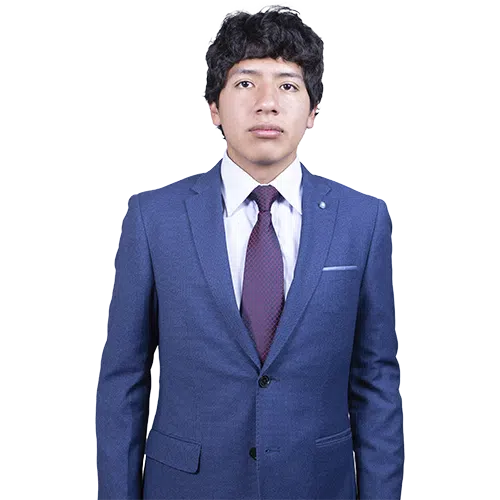

Estudiante comprometido por el trabajo responsable y transparente.
Soy estudiante de Ingeniería de Sistemas en la UNSCH, comprometido por el trabajo responsable y transparente, alguien que le gusta que las cosas se hagan bien y no haya tantas falencias, me gusta tener un equipo sólido con personas muy competentes, para así poder trabajar y tener un buen crecimiento tanto como profesionales en formación y personas con responsabilidades.
Pertenecí a la comisión de brigadieres de estudiantes, desarrollando desde temprana edad habilidades de liderazgo y responsabilidad comunitaria.
Delegado de grupo en mi primer año universitario, enriqueciendo mi formación social y académica mediante el compartir experiencias con compañeros.
Vicepresidente de serie por un semestre, liderando y representando a estudiantes, gestionando actividades y actuando como enlace con el CEIS. Responsable de organización, fiscalización y defensa de derechos estudiantiles.
Delegado de deporte gestionando trámites e impulsando deportistas, logrando el primer puesto en Interseries 200 como resultado del trabajo coordinado.
Capacidad destacada de escucha activa para comprender necesidades y perspectivas diversas.
Habilidad para trabajo colaborativo efectivo en equipos multidisciplinarios.
Facilidad para organizar actividades complejas y asignar roles de manera eficiente.
Capacidad profesional de negociación y mediación en conflictos y acuerdos.
Dominio de tecnologías actuales con curiosidad constante por innovaciones nuevas.
Como Vocal, ser el vínculo sólido y confiable entre estudiantes y órganos de representación, garantizando que cada voz sea escuchada, considerada y canalizada efectivamente hacia soluciones concretas.
Promover gestión transparente, participativa y cercana con comunicación fluida en ambos sentidos. Fortalecer rendición de cuentas, fiscalización y diálogo para que las decisiones reflejen las verdaderas necesidades estudiantiles.
"Vocalía activa que escucha, gestiona y representa."